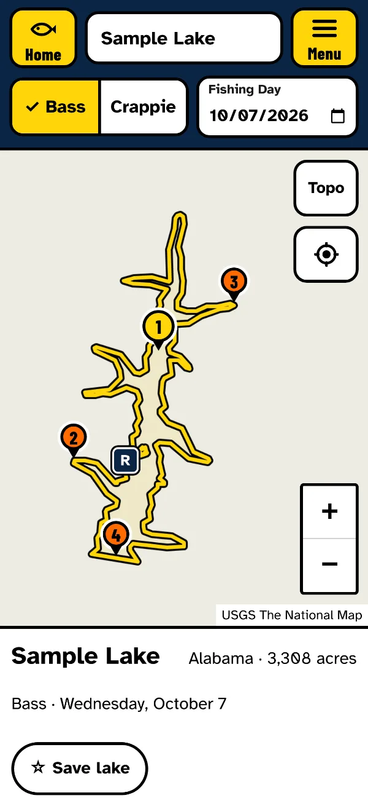
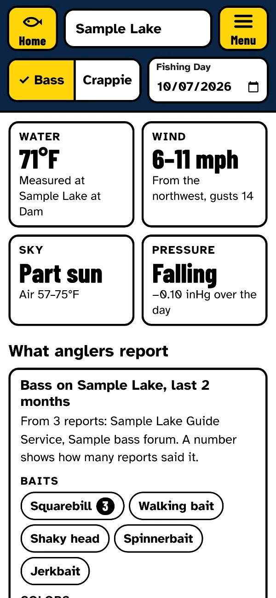
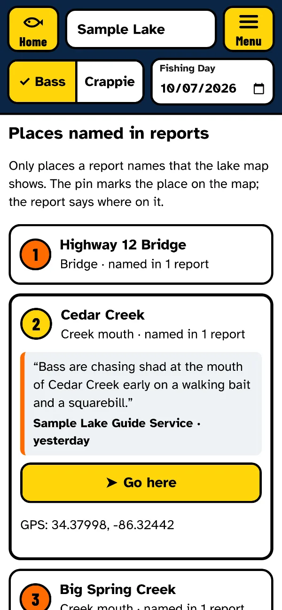
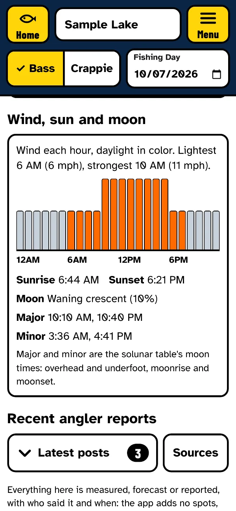
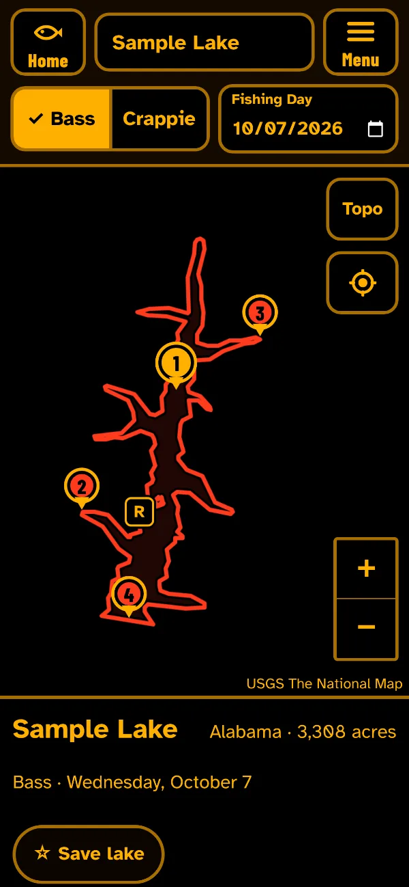

Places named in reports
When a report names a creek, bridge, island or dam that's on the lake map, it gets a numbered pin with the report's own words. Nothing else gets a pin.
Bass and crappie · Any lake in the USA
The baits, depths and places that state agencies, guides and anglers report for your lake. Nothing is made up: with no recent report, it says so and shows past years at this time of year.
Free in your phone's browser during early access. App Store and Google Play versions are coming.

For largemouth, smallmouth and spotted bass, and crappie, on any named lake or reservoir in the USA.
When a report names a creek, bridge, island or dam that's on the lake map, it gets a numbered pin with the report's own words. Nothing else gets a pin.
No recent report for your lake? It says so, then shows what was reported there in past years within three weeks of your date.
The baits, colors, methods, depths and cover named in recent reports for your lake, with how many reports said each one and who said it.
Big, high-contrast type and buttons you can hit with wet hands. After sunset it turns red and amber to save your night vision.
Water temperature from a USGS gauge on the lake when it has one, hour-by-hour wind, sky, air temperature and pressure, plus sunrise, sunset and the moon, up to 15 days out.
Go here to any pinned place or boat ramp right on the app's map: your boat, the distance and the direction, like your boat's GPS. Every report opens right in the app.
Type a few letters of any lake or reservoir in the USA.
Today or your trip day. Dates up to 15 days out use the weather forecast.
See the baits, depths and places anglers report, tap a pin for the report's own words, and go there.
These screens show a made-up sample lake with sample reports.




Allen Fish Finder shows only what is reported, measured or forecast, with who said it and when. It adds no spots, baits or ratings of its own.
A report tells you what worked for someone else on their day. Fish move, so use it as your starting point and adjust to what you find on the water.